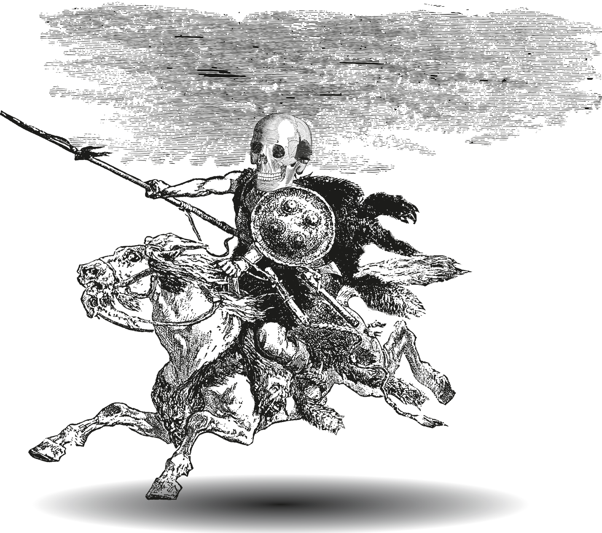

The Arabic Alphabet: A Guided Tour
by Michael Beard
illustrated by Houman Mortazavi
Ghayn is for ghazal
An early version of this chapter appeared in Alif: Journal of Poetics 35 (Cairo, 2001)
The English-language phobia of sounds from the throat is less an issue here, but Ghayn still makes some of us a little nervous.
As with 'Ayn, the anxiety is not just a contemporary phenomenon. Wright's 1859 translation of Caspari's 1844-48 grammar of Arabic describes it as if it were a mark of bad taste: “غ is a guttural G, accompanied by a grating or rattling sound, as in gargling, of which we have no equivalent in English . . .” (p. 6). Gargling is a little less unpleasant than the gagging and retching which the experts heard in 'Ayn, but no self-respecting letter would appreciate the analogy. “Grating” must be a surprise to anyone who has heard the sound spoken. As for “rattling,” I'm just mystified. Is there a vocal sound which rattles? (The problem isn't Wright's translation. It is indeed what the German says — Schnarrender gutturaler Laut (Arabische grammatik), p. 3. In Caspari's earlier Latin version, it's gutturale tremulum, [Grammatica arabica] which seems more innocent but still puzzling. I don't hear any particular vibration either. All sounds vibrate, right?)
Something about Ghayn invites pedantry. And yet, pronouncing it shouldn't be that hard: it's simply the voiced equivalent of Kh, (as G is the voiced equivalent of K, as ع is the voiced equivalent of ح ).
By now, Ghayn has probably become used to sounding strange. It started early: the sound, if I understand correctly, did not exist in Arabic's ancestor languages, from Phoenician to Nabataean. If we consider it an innovation of Arabic, requiring a new letter to make it visible, it's not alone. (It's one of six. The other five are ح Ḥâ [ḥuṭî], ذ Dhâd, ض Ḍâd, ط Ṭâ and ظ Ẓâ.)
The shape of Ghayn is a retrofit, 'Ayn, plus a dot. It can be a powerful dot. A friend shows me an anonymous poem in Urdu, which contrasts دعا (prayer, benediction) and دغا (deceit, treachery). The dot is the only difference.
ہم دعا لکھتے رہے اور وه دغا پڑھتے رہے
Ham duʿā ( دعا) likhte rahe aur vuh daġhā ( دغا.)[We kept writing 'prayers' (du'â دعا )
and what they read was 'treachery' (daghâ دغا ) ]
The alphabetical transformation from دعا du'â to دغا daghâ could be a proverb for attention to detail – the slightest distinction can lead to bigger ones, or can even lead to the opposite. As a proverb for life in society, it's a way of saying “watch yourself; people can easily misunderstand” (or perhaps “people will use anything as an excuse to misunderstand”).
That dot which separates غ from ع suggests that someone, at some moment in history, felt that the two sounds resemble one another. Not many people seem to feel it now. We have reason to suspect that it sounds to some ears more like ق, Qâf (two letters further on, the one we transliterate with a Q), but less percussive. In Ottoman Turkish, words spelled with a Qaf in Persian were often written as Ghayn.
Then there's G: contemporary Turkish represents غ two ways, both Gs. Sometimes it's our G (as in garp, غرب, Arabic gharb, “west”); or in the middle of a word it can add a breve overhead and become ğ. Persian آقا, Âqâ (a title used to mean “mister”), becomes ağa,آغا .
Turkish Ghayn can get still another sound, or lack of one: between two vowels it can drift into silence: Âğâ, آغا sounds like â'â. Uğur, “good luck,” sounds in speech like one prolonged syllable, “oor.” The sound disappears but the orthography remains.
Then there is G with an overhead dot in the standard transcription of Urdu: ġ or sometimes ġh. (Myself, I'll ignore the dots and stick with gh.)
A person could argue that we already have a gh in English: usually silent (“though,” “knight,” “weight,” “sleigh,” “slight.”) It's called a “digraph.” (I looked it up.)
(G aside, what is it about English H? For some reason it keeps showing up in digraphs. Speakers of Latin used TH (for instance) to render a Greek sound they didn't have (Theta, as in thesaurus, theatrum, or thorax). We do the same thing when we add an H to S to make the ش sound. (Latin didn't need it; neither did Greek.) English uses H for all sorts of sounds which we hear as peripheral or eccentric. It's H we use to represent the خ sound, K+H, or for the Persian ژ sound Z+H. William Jones justifies using the GH for a reason I didn't expect: “it is commonly pronounced in Persia, like our hard gh in the word 'ghost,'” thus demonstrating that the philological old-timers, though formidable scholars, seem to have lived in a different acoustic world than I do.)
The G sound does not exist in standard Arabic (there are exceptions in some dialects), and for some reason Ghayn is often used to transcribe it. “Geography” becomes جیوغرافیا , jîyûghrâfyâ. “Chicago” becomes, شکاغو, Shikâghu.
Dust
There is a story of a 14th-century manuscript, an epic act of calligraphy, a copy of the Qur'ân presented to Timur, in which each line, according to the 16th-century historian Qadi Ahmad, was a cubit or more in length. It was rolled into Timur's court in a wheelbarrow, and Timur rewarded the calligrapher in the manner of the traditional court anecdote: wealth, robe of honor, etc. etc. The calligrapher was named 'Umar Aqṭa', 'Umar the Amputee, who had lost his right hand somehow and wrote with his left. This in itself makes the story unusual. The prequel takes that a step further. (It sounds almost like a folk tale.) Timur had rejected 'Umar's previous copy of the Qur'ân, which had been printed so small it could be fit under the socket of a signet ring. (Probably not true, but it makes sense: if you're told your gift is absurdly small, following up with an absurdly big one is a good comeback.) The name of the miniscule script is غبار, ghubâr, “dust.”
Ghubâr script was said to have been developed for messages tied to carrier pigeons, but its use as an oddity is better established. Annemarie Schimmel attests to having, in Hyderabad, been given a grain of rice inscribed with the 17 words of the 112th Sura of the Qur'ân (Schimmel, 165n78). As if that weren't enough, she was given a second with her name on it.
The Thousand and one nights is a book of some size, no matter what script or font it is printed in. The reader who keeps going long enough may have a Ghayn experience: you might feel ghirr, inexperienced and new, ghaṭsân, submerged, perhaps gharîq, drowning in it.
The Height of Wonder
Shahrazâd's opening story, the one which initiates the story-telling marathon, famously, keeps replicating itself in miniature. Shahrazâd is telling stories to save her life, but it's not just her: time after time, in the manner of a fractal, characters in her stories are saved by story-telling too. (There is a beautiful essay by Tzvetan Todorov which says it plainly – that, in the Nights, stories are life. If you're a character in a fiction, tell a story. What else keeps you alive? The plan is working for Shahrazad.)
In her, by now, familiar opening story, where the merchant, traveling on business, sits down to eat lunch under a tree, it's familiar ground of traditional story-telling. The self-sufficient individual out alone on the road runs into an obstacle and encounters a challenge. Stories of chivalry in European tradition open that way; they hardly open any other way, with the knight setting off on a quest or perhaps just wandering. The reader is likely to imagine a context where the merchant's business has taken him to the margin, the غایة , ghâya, limit of human society, a غابة, ghâba, a forest. In that opening scene, when he reaches into his pack, takes out lunch, and eats, innocently throwing the date pits over his shoulder behind him, he is the picture of vulnerability (not a knight out looking for adventure). It suggests (at least for me) a secure world where merchants can travel alone, settling down to غذاء, ghadhâ, food, without fear. When the 'ifrit appears, huge and menacing, to say the merchant must die, it is enough of a disruption to be horrifying, but it's funny too, and probably less familiar ground for a traditional story. The monster has a motive for being غضبان, ghad͎bân, angry, though the fact that a flying date pit has killed his son doesn't register as tragic. We know that sons don't always resemble their fathers, but an 'ifrît's son so fragile that he is killed by a date pit seems an extreme case. (Is this son legitimate?) We also know that we aren't going to be very frightened by what follows.
The text tells us that everything we're reading is a spoken story, since we are hearing Shahrzâd's voice, but the truth is that we are reading it rather than hearing it. This has some advantages. Readers of a story can skip from episode to another, free to speed things up or slow them down. Such is the advantage the alphabet gives us over a listener like King Shahzamân. We can freeze-frame the story, knowing what will happen, and we can be surprised each time we read it (or imagine ourselves surprised, which may be just as good). When the merchant asks for a grace period to settle his affairs and say goodbye to his family, promising to be back at the beginning of the new year, a whole unexpected social world opens up because the'ifrît accepts, immediately, without an argument. His hyperbolic trust is perhaps as funny as the date pit which kills his son -- funny, but it is also, surprisingly, to me, moving. The `ifrît's surprising trust is one thing; then when the new year arrives and the merchant actually shows up (thus demonstrating that we can trust him too) we are at the extremes of trust. Exaggeration is funny, but I wonder if it also tells us something about the respect the culture shows for travelers. We expect them to keep their word. It is a world where traveling salesmen are positive figures.
Does everyone know the sequel? While the merchant is waiting to be executed, an old man walks by (the kind of respected mature individual referred to as a shaykh) leading a غزالة, a ghazâla on a chain. (Why just then? Don't ask. No story, the Chinese proverb says, without a coincidence.) Later there will follow two additional shuyûkh, one with a pair of dogs and one with a she-mule, but it is the ghazâla we remember. In part, of course, the reason is on the surface: a ghazâla is synonymous with beauty.
غزالة is a beautiful word both in its Arabic form and in its guise as a loan word in English, gazelle. In European narrative tradition we are more likely to use the gazelle to characterize elegance of motion, but in Arabic its beauty is in the eyes, which are likely to resemble what Edgar Allan Poe emphasizes when he describes the title character in “Ligeia”: “They were, I must believe, far larger than the ordinary eyes of our own race. They were even fuller than the fullest of the gazelle eyes of the tribe of the valley of Nourjahad.” (In the interest of scrupulous accuracy – Nourjahad doesn't exist in our world; a note in the edition edited by Hardin Craig notes that the phrase comes from a novel, History of Nourjahad [1767] by Sidney Bidulph, pseudonym of Mrs. Frances Sheridan. Poe almost makes you want to read it.) The esthetic of big eyes is everywhere. Cartoon figures and stuffed animals meant to appeal to our sentiments are often portrayed with oversize eyes. (Over the years Donald Duck and Mickey Mouse evolved eyes which hardly seem to leave room for brains.) I wonder if pandas would still have their reputation of cuteness if they didn't have those big patches surrounding their eyes, looking as if they were eyes in reality.
The size of the gazelle's eyes is the first item Ahmad Amin lists in his dictionary of Egyptian colloquial terms under the entry al-ghazâl. It's an image of beauty as old as The Iliad, though when Homer turns to an animal with big eyes it is the cow rather than the ghazâla, making the epithet for Hera--boôpis potnia Herê, the queen with ox eyes—a problem for English translators.
The ghazâla led by the sheikh is, in fact, the sheikh's wife, transformed by magic. We know what's going to happen. He will satisfy the 'ifrît's curiosity in exchange for a third of the merchant's blood. (First hint of the mathematical design of the Nights; three stories, one merchant.) Part of the fun of the story is that the Shaykh tells it in a matter-of-fact tone.
In Burton's translation:
Know O Jinni! That this gazelle is the daughter of my paternal uncle, my own flesh and blood, and I married her when she was a young maid, and I lived with her well-nigh thirty years, yet was I not blessed with issue by her. So I took me a concubine, who brought to me the boon of a male child fair as the full moon . . . (Burton, The Book of The Thousand Nights and Night, 1.33)
The ghazâla is the sinister figure of the piece, a sorceress who, as a human, initiated the process of metamorphosis by transforming the concubine and the son into a heifer and a calf. The heifer/concubine is passed on to a butcher and disposed of but the calf/son is saved through the intervention of a third woman. The savior figure is the neighbor's daughter, who turns out to be a benevolent sorceress. She recognizes the calf as a human transformed, turns him back into the merchant's son and claims him in marriage. She restores the moral balance by transforming the wife into a ghazâla. There is a coda, kind of an anti-climax, in which the benevolent sorceress dies, her widower the shaykh's son goes abroad -- which seems unnecessary to the story, except that it explains why the shaykh is there. He's gone out to find news of his son. The fact that he has brought his wife with him, in ghazâla form, seems unmotivated. Perhaps it's a sign of benevolence; perhaps he wants to keep an eye on her.
One of the rules of the narrative is that the stories have to escalate. (They are each worth a third, but each one has to be a little greater than the previous one. Isn't there a term for this in mathematics?) The second has two transformations. (The two dogs are his brothers, who tried to murder him, don't ask why, and he is taking the dogs to the good sorceress —there's a good sorceress here too – to have them restored to human form. This one is definitely a story of forgiveness.) They bring the 'ifrît to a state of غایة العجب, ghâyat al-'ajab, the غایة, extreme, of amazement
One authoritative manuscript simply says that the third shaykh told a story more wondrous than the other two, but without telling the story. It is said to be a venerable manuscript, but it's a shame to have the mathematical equation (three thirds equal one life) without a third story to prove it. As math teachers say, show your work. There are more complete manuscripts which fill in that blank and show why the third story is an escalation – because this story doesn't just describe a transformation. The third shaykh tells a story in which he was himself transformed (by his wife, into a dog), so that we get to see what the world looks like from non-human eyes. (In dog form he ends up begging at the butcher's shop. The butcher's daughter is the sorceress who solves the problem with two transformations: she turns the third shaykh back to a human, his wife into a mule.) The most wondrous moment, for me is at the end where the 'ifrît asks the mule whether the story is true or not, and is she really his wife: “And she nodded her head and replied by signs, 'Indeed, 'tis the truth: for such is my tale and this is what hath befallen me'” (Burton, p. 43).
Sieve
Ghayn is for غَیَّر, ghayyara, to alter or change. There is a famous poem by the Arab poet Ka'b ibn Zuhayr, a contemporary of the Prophet, a poem which functioned to save the poet's life (and soul). Ka'b was in conflict with the Prophet's community and, without a tribe to protect him, used the poem as an act of supplication. It's another member of that category of literature which, like the sheikhs' three stories, can used as currency to buy one's life. The poem, referred to as “Bânat Su'âd,” surprised me when I first encountered it because it is so much in the old heroic pagan style. It may be addressed to the Prophet, but it opens with the traditional complaint about an untrustworthy woman. The Su'âd of the title is characterized, famously, by two Ghayn words غول, ghûl and غربال, ghirbâl:
فما تَدوم علی حالٍ تکُونُ بها
کَمَا تَلَوّنُ فیی أَثْوابِها الغُولُ
وما تَمَسّکُ بِالوَصْلِ الذیی زَعَمَتْ
اِلا کَما تُمْسِکُ الماءَ الغَراَبِیلُFa mâ tadûmu 'alâ ḥâlin takûnu bi-hâ
Kamâ talawwanu fî athwâbihâ l-ghûlu
Wamâ tamassaku bi l-waṣli l-ladhî za'amat
Illâ kamâ tumsiku l-mâ' al-gharâbîlû.From form to form,/she turns and changes,/like a ghoul/slipping through her guises.//She makes a vow,/then holds it/like a linen sieve/holds water.–trans. Michael Sells, 138-39
or
She never stays the same / but is as mutable / as the ghûl in her garb / ever-changing.// Nor does she hold fast love's bond, / once she has claimed it, / except as sieves hold water—Stetkyevych, 25
The ghirbâl, sieve (pl., gharâbîl), is a homely Ghayn word appropriate for showing faithlessness—a mesh through which statements of loyalty just pass unchanged. (Ghirbâl has the distinction of being both a loan word from Latin – cribellum – and the source of a loan word into English, the verb “garble,” which at one time meant “to sift.”) To call a woman a ghûl is a more serious matter than calling her a sieve. Ka'b ibn Zuhayr's ghûl is, in Sell's description, another being, “a female subspecies of the jinnî that would bewilder the desert traveler or the would-be lover through constant change of form (tallawun), thus becoming known as dhâtu alwânin or dhû lawnayni: 'she-with-many-guises` or 'the double-guised`” (139-40).
The English word “ghoul” arrives on European shores in the 18th century. (The earliest OED citation is in Beckford's gothic novel Vathek, published first in French in 1786, borrowing the title from the name of the historical caliph Wâtheq, r. 842-47.)
Ghûl is the word that was applied by Arab astronomers, in a cross-cultural act of naming, to one of the scariest women in European myth, the figure of Medusa whose appearance turned observers to stone. We have a feeling of what she looks like primarily from looking, without risk, at the famous statues (Cellini, Canova). Her head is not unattractive, except for the snakes, which are of course sculpted in detail. Perseus, holding her at arm's length, is modeled in more detail still. By comparison the constellation of the same scene is a minimalist picture (something like 23 stars). Medusa is the star we call Algol, short for the Arabic phrase ra's al-ghûl, “the ghoul's head.”
The constellation we know as Corvus, floating between Virgo and Hydra, Koraks in Greek, is in western tradition the crow or raven, in Arabic al-ghurâb (in Persian kolâgh). The غراب, ghurâb, in Islamic tradition is the bird which taught Qâbîl (Cain) how to bury his brother Hâbîl (Qur'an 5.34). Richard Hinkley Allen suggested that it is connected to the Mesopotamian Tiamat, out of whose monstrous body the universe was carved, the constellation being in that case one of her monstrous sons (181).
Ghayn is for Gaza, غزة . There are moments when nothing you say can be adequate to the subject. A people undergoing something monstrous. “Cruelty” or “atrocity” don't cover it. No alphabet has room for it. Perhaps images could be more eloquent.
A friend suggests that Ghayn words tend to be sinister. The word غابة , ghâba (or ghâb), a forest, the scene where we might imagine the merchant eating his lunch, is a traditionally foreboding setting. Ghalîz is “viscous.” A ghalaṭ is a mistake. Ghâma means to become cloudy, overcast, blurred. Ghaidh is anger. Ghûl we know. Ghâmid is ؛obscure؛ or ؛difficult.؛ Ghayba is absence or concealment; ghîba is slander. A ghâshim is a tyrant. Gharb (Turkish garp) is the west, a term which may or not be negative, depending.
Gharbzadegi
The Iranian writer Jalâl Âl-e Ahmad, one of the early critics of the Shah's Iran in the 60s, devised a Ghayn word to describe still another mode of transformation, a shift of values that simply didn't have a word to grasp it. The book in which it appeared (published privately in 1962) was so powerful it couldn't be printed legally for years. The word he devised was غرب زدگی, Gharb-zadegî, “being struck by the West,” on an analogy with a series of common words in which the common participle suffix -zadeh, stricken” or “hit,” past participle of the infinitive zadan, suggests a physical affliction. The suffix -zadegi gives you the noun form of the phenomenon. غرب, gharb: “west”; زده –, - zadeh: “struck” – i.e., being struck by the west, afflicted by the west, west-sick. It's not a rare suffix: وبا vabâ is “cholera”: وبازده vabâ-zadeh is being struck by cholera. A سن , sen, is any insect which attacks a wheatfield; a field inflicted with them undergoes سن زدگی sen-zadegi. سرما, sarmâ, is cold. سرما زدگی, sarmâ-zadegi, is frostbite. گرما, garmâ, is warmth. گرما زدگی, garmâ-zadegi, is damage from the sun.
The coinage gharb-zadeh is a translator's dilemma, since the etymology in Persian is so important to its meaning, and there isn't always an easy way for a translator to make a reader aware of etymologies. Should you leave the word gharbzadegi untranslated and let context explain it? Should you say weststruckness? Occidentosis? All those -zadegi's will be pretty clear if we are reading it in Persian. Here's the opening of the book as translated by John Green and Ahmad Alizadeh. They use the word gharbzadegi and add their translation (“weststruckness”) in brackets. I've added some Persian vocabulary in rounded parentheses, just to show the problem with all those -zadegis:
I say that gharbzadegi [weststruckness] is like cholera (وبا زدگی -- vabâ-zadegi). If this seems distasteful, I could say it's like heatstroke or frostbite ( گرما زدگی یا سرما زدگی -- garmâ- zadegî yâ sarmâ- zadegî). But no. It's at least as bad as sawflies in the wheatfields ( سن زدگی -- sen-zadegî). Have you ever seen how they infest wheat? From within. There's a healthy skin in place, but it's only a skin, just like the shell of a cicada on a tree. In any case, we're talking about a disease. A disease that comes from without, fostered in an environment made for breeding diseases. (Al-e Ahmad, Gharbzadegi [Westruckness], trans. John Green & Ahmad Alizadeh, 21)
The process Al-e Ahmad sets out to describe, whereby one culture meets another and subtly alters its values and tastes, is harder to grasp than it may seem. Elephant in the room. Purloined letter on the wall. Water as seen by a fish. Long after Edward Said's Orientalism (1978), I still think we haven't really found a way to visualize the process with any precision. The analogy between cultural contact (domination of one culture over another) and disease is one way of suggesting that cultures work invisibly, and the analogy dominates the rest of Gharbzadegi. (It's not a fanciful analogy. Cultural change is most threatening and fearsome when it operates, in the manner of some infections, غائب, ghâ'eb, invisible.)
Âl-e Ahmad was right to see the inroads of European culture as a viral development. (When we speak of going viral in the on-line sense, we use the same metaphor.) Al-e Ahmad was of course right, but he was probably wrong to think that much could be done about it. Governments have tried.
Histories of culture are full of unequal developments—occasions when one institution, one product, one language, chokes out the others. Imports take over from the local products and franchises take over from the mom and pop stores so regularly that we may end up thinking that culture develops in no other way. Empire is the standard model for the process, but something like empire exists on smaller scale too, everywhere. In Naguib Mahfouz's Midaq Alley, the old storyteller loses his audience after the radio dominates the café space. When one literary form dominates and preempts the companion genres, there is of course a narrowing of human possibilities, though you hope for a trade-off whereby the triumphant genre might at least get more and more interesting in its new location, because it borrows, steals, attracts or adopts elements of refined and resonant smaller cultures in the process. However we read it though, a lot gets lost.
Beauty
We know that the gazelle, ghazâla, is an emblem of beauty. Ghazâl and Ghazâleh are women's names. Ghazal, another word from the same stem, is more abstract: Hans Wehr lists its meanings in Arabic as “flirtation,” “dalliance,” “love,” “words of love.” In Persian, Urdu, Turkish, and all the Turkic languages of Central Asia, and for that matter in English, the ghazal is a recipe for a specific variety of short poem.
Very specific in fact. Start with the rhyming pattern – only one rhyme per poem. Each rhyme comes at the end of a bayt, which is in two parts. (The terminology serves to make it harder. A bayt consists of two maṣrâ'. Maṣrâ' is usually translated as “hemistich.” “Two parts” is all you have to say.) The two parts of the first line rhyme. The rest don't. (Thus, a-a; x-a; x-a, x-a, etc.) So you know you're reading the first line if the two halves of the couplet rhyme, and you can verify it by running your eye down the rest of the poem and finding a the shape the rhymes make, horizontal at the top and vertical on the left side, like a Greek Gamma: Γ (the modern Greek equivalent of the Ghayn sound, if anyone wants to know). You know you're reading the last line another way: when you hear the poet switching point of view, speaking to self, by the pen-name, with advice, praise, criticism or encouragement.)
Monorhyme has formidable ancestors. The patriarch of the genre is in Arabic, the qaṣîda, which takes monorhyme to great lengths. Arabic is sufficiently rich in rhymes that a qasîda (not, by the way, a Ghayn word) can continue for pages. Persian, like Turkish and Urdu, has fewer rhymes and can keep the energy of mono-rhyme going only in sprints.
(It's worth knowing, by the way, that if what you want is a long narrative poem in Persian, it won't be a ghazal. For a long poem, you will want the masnavi – from Arabic mathnawî, مثنوی – (that's masnavi with a ث), where the two parts of each bayt rhyme, like heroic couplets in English. The regular change of rhymes allows a longer poem. It is the shape of verse narratives like the Shâhnâmeh , The Conference of the Birds or Rumi's long compendium of anecdotes, referred to only as “the Masnavi,” i.e. “The Masnavi.” It's not alone there. In Ottoman Turkish there is the 18th-century "Hüsn ü Aşk” (by Sheikh Galib, 1757-1799). In Urdu there is Muhammad Eqbal's 1932 Jâvid-nâmeh, his account of the afterlife, a kind of alternative Divine Comedy. In Chagatai there's Ali Shir Nava'î's Khamsa...)
If the ghazal is fated by the available stock of rhymes to be short, we can ask – how short? Dictionaries will specify a number of lines—Shipley's Dictionary of World Literature says from 4 to 14: Wikipedia says 5-15; the 'Amîd Persian-Persian dictionary says from 7 to 15). Short poem, big subject: typically, it's a poem about love . . .
(The ghazal is a vast subject, vast enough to require a digression. Two, in fact. We need to acknowledge the rubâ'î, offspring of the ghazal, since it's plucked from the first two couplets (a-a-x-a). We have it in English of course. It may be the most successful poetic import in English literature. The process of extracting a short form from a popular, longer one – i.e. the ghazal snipped out of the qasîda, the quatrain from the ghazal -- has happened more than once. In Japanese there is a form called the chōka, a long poem of a few pages, where the distinguishing mark is the syllable count, five syllable lines alternating with seven-syllable ones. The last two lines are sevens. Those last five lines of a chōka [syllable lengths: 5-7-5-7-7] can be extracted to form a tanka. It would have made sense for the tanka form to re-root itself in English. It's short, like the rubâ'î, with no need for rhymes, capable of memorable, pointed, amusing or moving maxims, but it didn't happen. Instead, English poetry appropriated the haiku, which is of course the first three lines of a tanka. This digression would have been easier as a chart.)
The ghazal's stock of images isn't enormous. Any student of Persian poetry could list the characteristic ones: parrot and sugar, nightingale and rose, moth and candle, Majnun and Leili – avatars of the poet and the loved object. Then there are the beloved's curling hair, the beauty spot (khâl), or the dust (the غبار, ghobâr) in front of the beloved's house. And there is the wine-bearer or Sâqi, who provides the wine designed to cure the lover's pain. (The sâqi has a long history. The Arabic origin, ساقٍ, sâqin , and its variants, made regular appearances in Arabic, e.g., in the wine poetry of the 9th-century Abu Nuwas, and in its mystical equivalent, e.g. Ibn Fâriḍ in the 12th, before it set up shop in the ghazal. And it's still popular. The British writer H.H. Munro wrote under the pen-name Saki. “Saki” is the word you think it is.) It is a genre with a privileged vocabulary, and as the old, probably true, cliché says, a game with limited parts encourages ingenuity. The components of the ghazal lend themselves to nuances of emotion, if not to narrative. If a ghazal were a story it wouldn't be much: “I'm in love. It isn't going well.”
It can generate a novel. There is Hamid Ismailov's We Computers: A Ghazal Novel (Yale, 2025, translated by the ingenious Shelley Fairweather-Vega), which follows the career of a French poet who discovers the ghazal. The novel is narrated by a computer, and from time to time it has the familiar voice we're used to hearing when we consult an a.i. program. The computer can write ghazals (towards the end it is instructed to write 21,600 poems, no doubt including ghazals– totally possible I suspect, since I've seen an a.i. program write a few – in Persian, with all the proper features, in about five seconds.) In fact, the book is understood to be one big ghazal. I'm partial to Chapter Six (“The Sixth Bayt”), which opens quoting one of Hafez's most cunning and brilliant poems, a dialogue in which the love object speaks.
گفتم غم تو دارم گفتا غمت سر آید
گفتم که ماه من شو گفتا اگر بر آید
Goftam gham-e to daram; gofta ghamat sar ayad.
Goftam keh mah-e man show; gofta agar bar ayad.I said “you've afflicted me with sorrow (gham); she said, “your sorrow will end./I said “please, be my moon”; she said “if it rises.”
No one agrees with me on this, but it looks to me as if the loved object is ambiguous in those replies. “Your sorrow will end” could mean “you'll get over it” or it could mean “you just might get lucky.” Same with the moon. “If it rises” could mean “This moon isn't ever rising” or it could mean “the moon always rises eventually.” The computer in We Computers doesn't deal with my question. It circles the ghazal with naïve, inert observations (that ghazals don't have names, except for the passages by which readers remember it, that the relationship between the two interlocutors is undefined, that there is no location mentioned in the poem -- except the doubtful suggestion that since the moon is out they must be under a night-time sky, that there are no material objects, “in the class of a hoe, sieve or stirrup”), all of which lead to the conclusion that there is no real content, just the empty ghazal form. This doesn't explain why a ghazal can be so beautiful, so moving, or so wise, but I take the computer's point. The ghazal is a machine with a limited number of parts. Ambiguity is built in, and the esthetic appeal can be the appeal of watching poets reassemble the parts, demonstrating their surprising freedom. There is a demonstration later in the book that the non-human elements of human poetry can be demonstrated in western poetry as well, by Poe's “The Raven,” where the center of the poem, the word “nevermore,” emerges, mechanically, from a non-human source, but generates a classic expression of mourning. (Poe said as much in his essay “The Philosophy of Composition,” which is designed to shock us with The Raven's mechanical origin.)
There is a novel in Sorani Kurdish with the same theme, sort of, spelling ghazal a little differently: غه زه ل . (Kurdish orthography writes syllables separately). The title character is غه زه لنوس , Ghazalnus (the word ghazal, غه زه ل , plus the suffix “-nûs,” which suggests something having to do with writing). Thus, something like “Writer of ghazals,” “The Ghazal Man” or perhaps “Mr. Ghazal.” The full title of the book is غه زه لنوس و باغه کانی خه یاڵ ,“Ghazalnus and the Garden of the Imagination.” It's a substantial story (825 pages, 542 in an elegant 2016 translation by the journalist Kareem Abdulrahman). The title is translated as I Stared at the Night of the City (I don't know why). Ghazalnus recites ghazals, keeps a library of ghazals, teaches ghazals, and is defined by them. Ghazals are an ubiquitous force which can materialize anywhere. (A character says, “I had never been sure the soul existed until I heard the ghazals.”-- 183) You can step into its world, out of ours. Corrupt oligarchs (called by the loan word “barons”) try to corral and own it . It seems to be able to father children in the outside world, in which case the infant is born with a verse inscribed on its chest. (We see two of those verses. One [p. 60 / 98 in the original] consists of two rhyming couplets; the other [164/251] is a rubâ'î – which of course makes it the first two bayts of a ghazal.) The ghazal becomes a stand-in for the imagination altogether (the خه یاڵ, khiyâl, in neighboring languages خیال, also a key word in the ghazal lexicon), the way we might use the word “poetry” to describe anything beautiful.
It isn't worth trying to find an English equivalent for the word “ghazal.” You'll sometimes see desperate attempts like “ode” or “sonnet,” but the “ghazal” is such a specific form we should trust it to stand on its own as a loan word. “Ghazal” sounds better anyway, though there's a controversy there. Even the pronunciation has been trouble.
There is an article by the late poet (in English), Agha Shahid Ali, in which he discusses the way the ghazal is perceived in the anglophone world and contemplates its pronunciation among us here in the States: ghazál, with the accent on the second syllable, on the model of French. It is a pronunciation, he argues, which one might hear in the line at Starbucks where the Italian word latte comes out as if it were latté, with an accent on the second syllable.
...to be teasingly petty, the pronunciation: it is pronounced ghuzzle, the gh sounding like a cousin of the French r, the sound excavated near unnoticeably from deep in the throat. So imagine me at a writers' conference where a woman kept saying to me, “Oh, I just love ghazaals, I'm going to write a lot of g'zaals...“ (Ali, 86)
He's right about Urdu. Like Turkish, it prefers an accent on the first syllable. In Persian, however, where the form took on its distinctive shape, the habit is for the accent to fall at the last syllable (as in French). I won't argue with the deceased, but the woman at the writers' conference is, in Persian, correct.
In defense of Agha Shahid Ali's position, we might add that the ghazal in Urdu, where his pronunciation is correct, is alive and flourishing. There are still Urdu popular songs in ghazal form. It might make sense for us to spell it “ghuzzle,” as he suggests, with the understanding that we have a choice how to pronounce it. It isn't an aesthetic obligation either way.
Pronunciation aside, whether in Ottoman, Persian, Urdu, Chagatai, Pashto and languages I don't know about, the ghazal is about intensity: the beloved is hyperbolically beautiful and the lover is hyperbolically infatuated: غریب*, gharîb (etymologically a westerner), meaning a stranger, poor, humble, alienated, غافل. ghâfel, neglectful, careless, unaware, stuck in غربت , ghorbat, exile. He is definitely not غالب ghâleb, “victorious,” though there is a great Urdu poet, one of the great masters of the ghazal, who took Ghâleb* as his pen-name.
As for the object of love, she or he never quite comes into focus. Distant for sure. Often characterized by غرور, ghorur, “pride.” Pride comes up a lot, perhaps because it causes distance and distance is the ghazal's characteristic medium, regardless of the object. And it's not just the ghazal. The same problem comes up with the, also distant, love objects in Shakespeare's sonnets. We never really learn what makes them so appealing. Northrop Frye has argued that those who try to read Shakespeare's sonnets literally, i.e. to identify that subject as a biographical person (the Earl of Southampton, Willie Hughes, Emilia Lanier, Montserrat Lombard), are asking us to believe that Shakespeare was in love with “an unresponsive oaf as stupid as a doorknob and as selfish as a weasel” (Fables of Identity, p. 89). The poet's business is the psychology of infatuation, as experienced, from inside.
Above all Ghayn is for غًمّ, ghamm-- sadness, anxiety, remorse, regret (often gham, with a single M). Hâfez (1319-1390) provides a variant of this in one ghazal after another.
سینه ام زاتش دل در غم جانانه بسوخت
Sîneh-am z'âtesh-e del dar ghamm-e jânâneh be-sukht
[The fire in my chest burned with gham for my beloved. ]
Proof By Concordance
I don't want to make any big claims about the importance of a single component, that غًم ّ is the definitive word of the ghazal, the key to the genre, preferred mood of the discipline, a literary institution, but the argument is out there, waiting to be made. Check a concordance of Hafez and under غم you find 176 citations.
Hafez explains it as an unavoidable hazard:
ناصحم گفت که جز غم چه هنر دارد عشق
گفتم ای خواجه عاقل هنری بهتر از این؟Nâseḥ-am goft keh joz gham cheh honar dârad 'eshq --
Borow ay khâjeh-ye 'âqel honari behtar az în?[My master said the discipline of love is nothing but gham.
I said, Master, can you recommend a better course of study?]
In Hafez's dialogue (گفتم غم تو دارم), the one the computer chose to analyze, gham appeared in the first line, as if it was necessary to establish the rules of the game.
There are other words for the same emotion— هجران hojrân, “sorrow”; سوداء sudâ, “melancholy”(a “black” mood, since the stem means “black,” like the melan of “melancholy”), ḥuzn, “sorrow,” jodâ'î, “separation,” but, at least to me, gham seems to be the default mood. It isn't just Hafez. In the opening of a ghazal by Sa'dî (1184-1291) there is a pair of ghams in the first line, and gham is what ties poet to reader. Gham is the ticket of admission; if you don't have it you won't get in.
آنرا که غمی نیست چون غم من چه داند
کز شوق توام دیده چه شب میگذارندوقتست اگر از پای در آیم که همه عمر
باری نکشیدم که بهجران تو ماندÂn-râ ke ghami nîst chun gham-e man che dânad
kaz shawq tawâm dideh che shab mi-gozarânad
Vaqt-ast ke az pâi dar âyam ke hameh `omr
Bârî na-keshîdam ke be hojrân-e to mânad.
There is a version of this poem sung by the Iranian singer Khatereh Parvaneh in the second volume of an old Folkways record called The Classical Music of Iran: Dastgah Systems. It's as good a classroom introduction to the ghazal as I can imagine, to the poetry and to the improvised music which brings it to life. The editor of the record, Ellen Zonis, adds an English version:
He who has not sorrow [غم] like mine, how could he know
How my eyes treasured your image all through the long night.
Now must I be defeated, for all my life
I have never borne such sadness.
It is a sensitive translation, though we might want to see in English that there are two ghams, as in Persian (“someone who doesn't have gham like my gham...”).
In the opening of a ghazal by Hafez, it's not only the poet's pain but the mood of the age, the mood all around him. Everyone has a ticket. But at least he has a cure:
غم زمانه که هیچش کران نمیبینم
دواش حز می چون ارغوان نمیبینم*Gham-e zamâna ke hich-ash karân na-mibinam davâ-sh joz may chun arghavân na-mibinam*.
[Against the suffering of the age, of which I see no end (no shore, no boundary),
The only remedy I can see is wine as red as the redbud tree (judas tree).]
In a ghazal by the great Urdu poet, Ghâlib (1797-1869), gham is all consuming, fatal, not even confined to lovers, universal solvent of the soul:
غم اگرچہ جاں گسل ہے پہ کہاں بچیں کہ دل ے
غمِ عشق گر نہ ہوتا غمِ روزگار ہوتا*Ġham agarchih jāñ-gusil hai pah kahāñ bacheñ kih dil hai
**Ġham-e ʿishq gar nah hotā ġham*-e rozgār hotā.[Even if sorrow is soul-wrenching, how can I escape it? It lives in the heart.
If it hadn't been the sorrow (gham) of love, it would have been the sorrow of the world.]
The next couplet of the same ghazal takes things a few steps further. Hafez said that gham had no boundaries (no karân, no shore), but here we've gone even further. You can't describe it at all: gham just plain overflows the poem.
کہوں کس سے میں کہ کیا ہے شبِ غم بری بلا ہے
مجھے کیا برا تھا مرنا اگر ایک بار ہوتاKahūñ kis se maiñ kih kyā hai shab-e ġham burī balā hai
mujhe kyā burā thā marnā agar ek bār hotā [ed.Pritchett][Who could I ever describe it to? The night of gham is too awful.
I wouldn't mind dying, if it were only once.]
I like to think that this is an extreme and that's as bad as gham can get.
Maybe it's soul-wrenching, but there are cures. One cure is the one Hafez suggested, getting drunk. Another, suggested by the Kurdish poet Nâli (1800-1856) is more straightforward – just bring her back.
باوەڕ مەکە ڕۆح سەختی غەمی فیرقەتی تۆ بم
بۆ هاتنی تۆ باقییە نیوە نەفەسێکمBâwar meka rûḥ sekhti ghamî fîrqeti tô bim
Bô hâtini tô bâqîye niwe nefesêkmi
[Do not believe that my soul can endure the sorrow of separation from you.
It is only in anticipation of seeing you again that I have withheld my final breaths. – paraphrase by Sirwan Ewl]
Good News
Gham can be dispelled and out of our way, but that doesn't mean you stop talking about it.
رسید مژده که ایّام غم نخواهد ماند
چنان نماند و چنین نیز هم نخواهد ماندResid mozhdeh keh ayyâm-e gham na-khâhad mând
Chenin na-bud-o chenin ham na-khâhad mând.[Good news has arrived: the days of gham are behind us.
It's gone already, never to return.]
Good news may have arrived, but the rest of the poem seems a little melancholy. It's a list of other things which, like gham, won't remain (na-khâhad mând). The person he loves considers him no more than dust, but at least his rival's reputation won't last either. The music of the magnificent Jamshid's court was a song that said drink up: Jamshid won't last forever. The love of the moth for the candle won't last after the light of dawn has come.
Consult enough poems, and the intangible is likely to take on a material form. In a ghazal in Pashto by Rahmân Baba (1632-1706) the gham is heavy, but at least you can visualize it.
لکه څوک چه اوښ بارپه می ښی کیږدی
هسی زۀ ییم په خپل غم پورمی ناتوان
Laka tsūk che awx bār pe meyshī keyzhe
Hasi zah yēīm pe khpāl gham pōr mey nātawān
[Like someone with a load upon his back meant for a camel/I'm burdened with a load of gham that I'm too weak to carry.]
or, in an imaginative translation, more emphatic still:
To place a camel's load upon/an ant is utter madness/And yet when all my strength has gone/so heavy is my sadness.
--tr. Jens Enevoldsen, Selections from Rahman Baba, #30, pp. 100-01]
There is something reassuring about a camel-load of gham. It exaggerates, but not that much: you can imagine the size of it, how much it might weigh and what it might look like. Besides, there is a little hint which personalizes the relationship, that the loved object is capable of turning someone into a beast of burden.
Ṣâ'eb (1592-1676), writing in India a generation earlier, also allows that gham is heavy, in fact way heavier than a camel load, but he's cool with it. He can walk around carrying it on his head:
بر سر گرفته ایم و سبکبار می رویم
کوه غمی که پشت فلک را شکسته استBar sar gerefteh-im o sabokbâr mi-rovim.
uh-e ghami ke posht-e falak râ shekasteh ast.[We proceed lightly, while carrying on our head
a mountain of gham which broke the back of the heavens.
. . . or in a translation by the a.i. program CoPilot:
"We have borne it upon our heads and move lightly, The mountain of sorrow that has broken the back of the heavens."]
Ṣâ'eb is one of the representatives of the Sabk-e hindi, “The Indian style,” popularized by Persian poets at the Moghul courts in the 17th century. The style was controversial from the start, seen as extravagant, cerebral, liable to take unpredictable turns of thought. E.G.Browne said that he was embarrassed to like it so much. The logical analogy is with the baroque style in Europe or “metaphysical” in England (And by coincidence it developed in the same century.) Here's how the poem opens.
این خار غم که بر دل بلبل نشسته است
از خون گل خمار خود اول شکسته استIn khâr-e gham keh bar del-e bolbol neshaste-ast
Az khun-e gol khumâr-e khod avval shekaste-ast.[The thorn called gham – which perches on (pierces) the poor nightingale's heart / has cured his hangover (or sobered him up?) with the rose's blood.]
A verse like this is still controversial, and I'm not at all sure I get it.This is partly because I don't know the proper boundaries of the genre. There are certain liberties you just aren't expected to take. The image of gham shrinking in size to a small sharp object may not be too big a transgression, since roses, famously, have thorns, and a nightingale drunk with love is nothing new. The hangover and its cure (or is it just “drunkenness”?) are more complicated. It's a stretch to imagine that the thorn conveys the rose's blood. One way or another, the nightingale has managed to ingest some of it: is it a transfusion via the thorn or does he imbibe it in the manner of a hummingbird rather than a nightingale? You can't help but feel there's something sexual here. (“Where the bee sucks there suck I.”) I even wonder, if that blood cures the nightingale's malady, whether the result implies a kind of satisfaction. The rose is bleeding (it's red after all). Could we read this line to say that the rose is in love too, and that fact is what cures the nightingale's malady? Mutual pain allows you to prefer your gham to a cure. (I became aware of this poem from a marvelous article by Riccardo Zipoli, who might not see, judging from what I've just said, any evidence that I've read it at all [Persia barocca, pp. 89-151, 141].)
Armed and Dangerous
Or gham can operate on its own. The Ottoman poet Nâbi (1642-1712) imagines it as bigger than a thorn, bigger than a camel load but smaller than an ocean, a power with its own enforcement capability.
سلطان غم نشیمن ایدلدن درومنمی
صحرای قلبه لشکرسودا کلور کیدرSultân-ı gham nişîmen idelden derûnumu
Sahrâ-yi kalbe leşker-i sevda gelür gider.[Since the Sultan of Gham has occupied my soul, / his armies have been riding back and forth across the plain of my heart. (There is also a translation in Ottoman Lyric Poetry, pp. 116-17)
The parts that look wrong to me are, very likely, actually correct.]
It seems that I'm not the only one to say that gham is the dominant image of the ghazal. It's not just an intense emotion. Gham is a power like a sultan with an army,
No doubt there are a lot of poets who have understood gham to be a tyrant Nâbi had examples close at hand, for instance a ghazal of Hafez which warned us about the same army:
اگر غم لشکر انگیزد که خون عاشقان ریزد
من و ساقی بهم تازیم و بنیادش بر اندازیمAgar gham-lashkar angîzad keh khun-e 'âshigân rîzad
Man o sâqî beham tâzim o bonyâd-ash bar andâzim.[If the gham army decrees that the blood of lovers should flow,
the Saqi and I will combine forces and topple them down to the foundation.
or
If Sorrow sends her soldiers here
And wants a bloody fight,
my serving boy and I will put
them one and all to flight. – Dick Davis, p. 10]
A lashkar is an army, the same word Nâbi uses. A gham-lashkar is an army with a specialty. The gham patrol. In an innocent reading, it could simply mean people who don't like fun. Or it could be a unit whose mission is to enforce the rules of the genre, literary tradition as a military power. Today it may remind us of something more modern (like the Gasht-e Ershâd, or Guidance Patrol, whose job includes making sure women are properly dressed.) When a government begins to attack poets (it's happened), Hafez imagines fighting back. He has picked the right side-kick, an old-timer with a long resumé.
